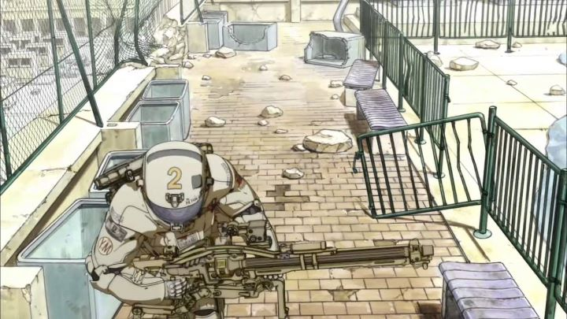

Remember Walt Disney's "Fantasia?" Having a series of animated short films, rendered in different styles, presented as a feature film under the umbrella of a shared theme... what a neat idea. We don't get many animated "anthologies" like this in North America. But in Japan, where animated output is a little higher, the concept isn't so unusual. Still uncommon, such that we only get an anthology every few years or so. But much greater than every few decades. And if we're REALLY lucky, some American distributor will take a chance to release the collection of shorts to English audiences, despite knowing the limited "art house" market that would take a chance on it (and knowing that same audience would normally stick their noses up at anything described as "anime"... a shame, since these anthologies often showcase work not resembling anime, and often the best the industry has to offer)."Short Peace" was a 2013 collection, partly getting attention due to having a short film by Katsuhiro Otomo, the visionary director and manga artist behind cult classic "Akira," but a man who otherwise hasn't made much in anime outside short films like these. Another oddity about "Short Peace": virtually all of its content is computer-animated, at a time when the vast majority of anime still used traditional 2D methods. Besides the four main shorts in the feature, there was a fifth project, a small video game called "Ranko Tsukigime's Longest Day," meant to be part of the whole: clearly, the project was attempting to be more experimental than normal. And while Japanese shorts are usually ignored, one of the shorts, "Possessions," went so far as to receive an Oscar nomination for animated short in America.After a short but excellent opening sequence by Koji Morimoto, the main feature begins. "Possessions" is the most light-hearted story, telling a strange tale of a weary traveller in ancient Japan. Caught in a storm, he stops at an abandoned shrine, and during what is possibly a dream sequence, wakes up in a strange room with abstract and mischievous spirits that collect broken waste, which the man agrees to help fix. The animation is a bit awkward (especially on the man), moreso than the other shorts, but is expressive, and the short is probably the most memorable of the collection."Combustible" is another story set in old Japan, but takes greater inspiration: the entire short is shot from a distance to mimic an old Edo painting. Because of this distance, its' use of 3D animation is less jarring, and could even be confused for 2D animation at times. The story is relatively straight-forward and tragic: a fire engulfs the city, leading to the death of a engaged woman whose true love was that of a rugged fireman. The excitement of the event is well-directed: this is the one by Katsuhiro Otomo. But without a particularly expansive story, it feels more like an excercise than a film. "Gambo" is yet another story set in old Japan... kind of a trend here, isn't it? But it's also the most jarringly violent. Gambo is the name of a large white bear, a wild creature who appears partly as a guardian of the forest. Meanwhile, a local village is terrorized by a massive red ogre, and while they are able to keep it satisfied by offering a young girl as an offering every night, it breaks free one day to attack everyone. The emperor's daughter and samurai each prepare to confront the orgre, seeking the help of Gambo to help destroy it. I'm not kidding when I say it's incredibly violent, and the ogre and women part... while not being explciit, the sexual horror is definitely present as well. Honestly, this is a bit much for anyone to watch, despite being the most fleshed out fantasy epic of the bunch.And finally, "A Farewell to Weapons," which is set in a future abandoned Tokyo, NOT during the Edo period! It's directed by Hajime Katoki, best known for his work in the video game industry, but the story itself is based on a manga by Katsuhiro Otomo, giving Otomto two credits. It feels much more like Otomo's typical style, but even Katoki deserves some credit: his experience makes this an exciting action story, well directed as it portrays the final fight of a small group of humans against an autonomous weapon army. All of the shorts are good... but not great. To say that the opening animated sequence (the thing that isn't supposed to count) is better than the main content isn't a good sign. And while many short-film collections offer some imaginative content that children could enjoy... well, Japanese anthologies don't follow that trend, and this collection in particular should be restricted from anyone under 18, if only because of "Gambo." The biggest draw then would be the experimental use of 3D animation by a team of anime directors. 3D is the way of the future; American studios had already completely abandoned 2D a few years prior. And even in Japan, a country of tradition, it seems inevitable that 2D animation will one day be gone. Here, some interesting design choices were made, and a handful of scenes are done in a way that only 3D could really support. But it still remains true that it doesn't animate well: even the majority of television anime released in 2013 come across better than this. Maybe that's why, as of this writing (2019), the vast majority of anime is still done with pencil even now. But that experimentation in both animation and story make "Short Peace" an intense and fascinating experience. While not the best on hand, enthusissts will still want to own this as part of their collection.
- "Ani" More reviews can be found at : https://2danicritic.github.io/ Previous review: review_Shirobako Next review: review_Sin_-_The_Movie